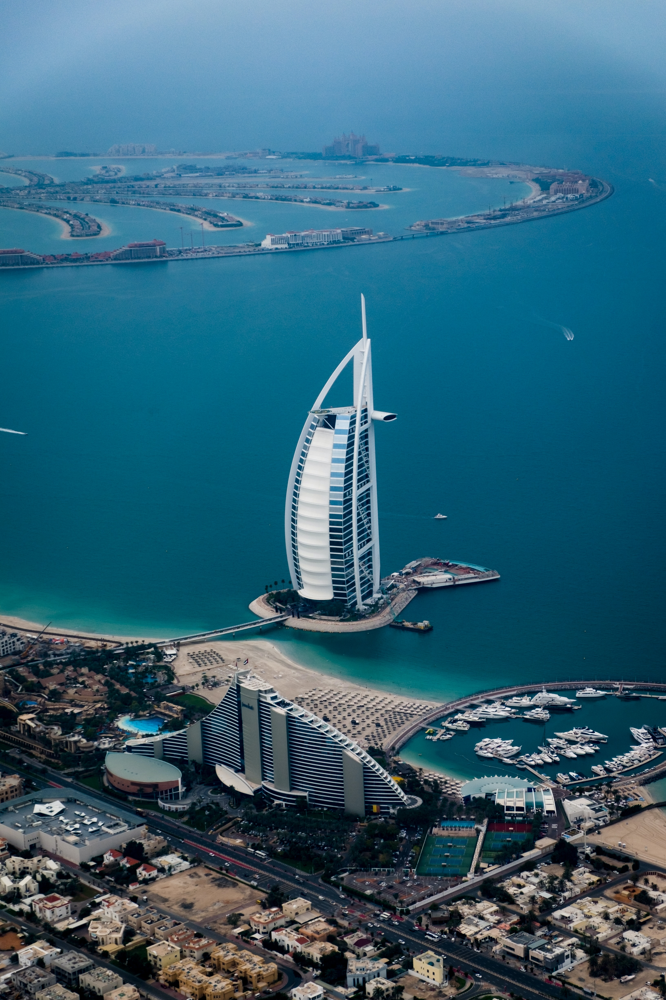

| Destination | Description | View |
|---|---|---|
| Maldives | The Maldives is a republic that lies south-west of the Indian sub-continent. it is made up of a chain of nearly 1,200 islands, most of them uninhabited. | |
| Santorini | Santorini is a fantastic Cycladic island in the southern Aegean Sea with astonishing volcanic scenery and world-famous sunset vistas | |
| zanzibar | Zanzibar Island is known as Africa's tropical paradise, offering the worlds most beautiful beaches. | |
| Mauritius | Mauritius is an island nation off the southeast coast of the African continent in the southwest Indian Ocean. It is located east of Madagascar. | |
| Tahiti | Tahiti is located in the central part of the Pacific Ocean and the nearest major landmass is Australia. Divided into two parts, Tahiti Nui (bigger, northwestern part) and Tahiti Iti (smaller, southeastern part) | |
| Dubai | Dubai is a city of skyscrapers, ports, and beaches, where big business takes place alongside sun-seeking tourism. Because of its large expatriate population, it feels like a Middle Eastern melting pot, and the atmosphere is generally tolerant. |  |
The Maldives
The Maldives is a republic that lies south-west of the Indian sub-continent. It is made up of a chain of nearly 1,200 islands, most of them uninhabited.
Santorini
Santorini is a fantastic Cycladic island in the southern Aegean Sea with astonishing volcanic scenery and world-famous sunset vistas
Zanzibar
Zanzibar Island is known as Africa's tropical paradise, offering the world's most beautiful beaches.
Mauritius
Mauritius is an island nation off the southeast coast of the African continent in the southwest Indian Ocean. It is located east of Madagascar.
Tahiti
Tahiti is located in the central part of the Pacific Ocean and the nearest major landmass is Australia. Divided into two parts, Tahiti Nui (bigger, northwestern part) and Tahiti Iti (smaller, southeastern part)
Dubai
Dubai is a city of skyscrapers, ports, and beaches, where big business takes place alongside sun-seeking tourism. Because of its large expatriate population, it feels like a Middle Eastern melting pot, and the atmosphere is generally tolerant.